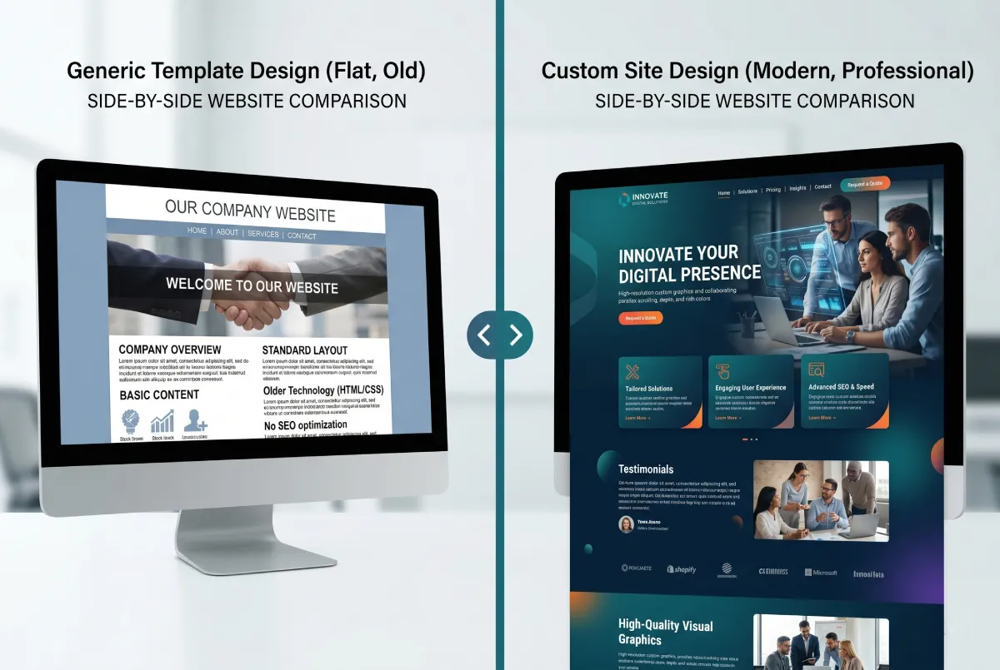
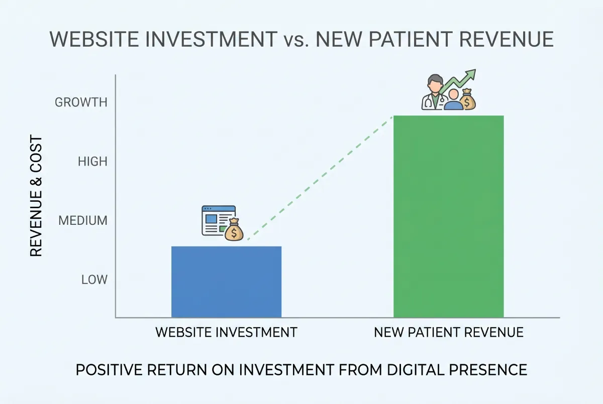

If you are searching for the cost of a website, you have likely seen wildly different numbers. Some say $500. Others say $10,000. What is the real number? And why does this massive gap exist?
The honest answer: you pay for exactly what you get. And what you get dictates your results.
In this article, we break down your options honestly. No hidden costs. No exaggerated claims. Just clear facts to help you make the right business decision.
Tier 1: Do It Yourself (DIY)
Build it yourself, zero tech skills required, using ready-made templates.
Platforms like Squarespace, Wix, and WordPress.com allow you to build a site without knowing code. They typically charge $12 to $50 a month, totaling $150 to $600 a year.
Pros: Extremely low cost. Fast launch. Total independence.
Cons: Sites built by amateurs usually look amateur. Load speeds often suffer. SEO remains severely limited. Most importantly: without design experience, your result looks like a hobbyist's page, not a premium healthcare practice.
Who it fits: Someone just starting out, holding a zero-dollar budget, who simply needs a placeholder URL. It beats having nothing. But expect matching results.
Tier 2: The Freelancer or Template Designer
Someone customizes a pre-made template with your branding. Fast, but limited.
You find this option everywhere online. A freelancer buys a WordPress or Squarespace template, slaps your brand colors on it, and delivers it in a few weeks.
Pros: Cheaper than custom development. Faster delivery. You avoid doing the heavy lifting yourself.
Cons: You essentially buy a generic template. It completely ignores your specific audience. Technical load speeds remain problematic. Professional SEO requires additional investment. And you depend entirely on the designer for basic updates.
Who it fits: A therapist who wants to exist online but refuses to commit to a full business investment. A step above DIY, but it usually looks exactly like what it is: a cheap template.

Tier 3: Professional Custom Web Design
Designed specifically for you. The result justifies the cost, not the hours worked.
Here, the designer ignores templates. They build a digital asset tailored specifically to you, your audience, and your financial goals.
What this actually means:
The design projects absolute authority. It looks like no one else's site. The copy speaks directly to the exact patient you want to attract. The architecture ruthlessly drives the visitor to contact you. SEO lives in the foundation from day one. Load speeds hit top metrics. It performs flawlessly on every single device.
Who it fits: A therapist who treats their website as a powerful acquisition tool. Who demands proper digital representation. Who views this expense as a calculated, high-return business investment.
The Hidden Costs Everyone Forgets
Beyond the initial build, you must factor in the ongoing operational costs.
Hosting: $5 - $30 / month
Hosting is the server where your site lives. Every site requires hosting. The cost depends entirely on the provider and speed tier.
Domain: $10 - $20 / year
You renew your domain name (e.g., drjohnsmith.com) annually. A minor but mandatory ongoing cost.
Maintenance and Updates
A WordPress site demands regular plugin and security updates. A custom-built HTML/CSS site requires almost zero maintenance because it lacks fragile dependencies.
Professional Photography
If you lack professional photos, a session costs $200-$500 in a major city. Pay it. A terrible photo instantly destroys world-class web design.
How to Evaluate the Investment
Here lies the most critical section of this article. You do not evaluate a website's cost as a flat expense. You evaluate it strictly as a return on investment (ROI).
A New York therapist charging $150 per session seeing a patient weekly makes $600 a month. In one year, that single patient represents $7,200.
If a properly designed website brings in just one new patient every quarter, it pays for itself in year one. Every subsequent patient delivers pure profit.
Conversely, a site that brings zero patients — regardless of how cheap it was — represents burned cash.
The Truth About Cheap Sites
Many therapists follow this logic: "I will start cheap, and if it works, I will upgrade." This logic carries a fatal flaw: if it fails, you blame the wrong variable.
If your mediocre site brings no patients, you never know the real cause. Does the market lack demand, or did your site simply fail to convert? A premium site removes the variables. You measure real data and make informed decisions.
Furthermore, a cheap site damages your brand. A prospective patient views it, loses trust, and leaves. You remain completely unaware you lost them. No notification arrives saying, "Patient X chose another therapist because of your cheap template."

What to Ask Before You Pay
If you decide to hire a designer, demand answers to these questions before signing anything.
Have you built sites for healthcare professionals? Experience with this specific audience matters. A therapist carries entirely different needs than a restaurant owner.
How do you handle SEO? Do not accept "I do SEO" as an answer. You need to know if they map page structures, target specific keywords, and execute technical optimization.
How fast does the site load? Demand Google PageSpeed Insights reports for their past projects. Anything scoring below 80 signals a technical problem.
What happens after launch? Can you edit text yourself? Do they charge for minor revisions?
What exactly does the price include? Design, development, copywriting, photography, hosting, domain. Know exactly what you buy and what you don't.
The Investment as a Ratio of a Session
Think about the investment using this specific framework.
A $2,000 professional website equals roughly 13 sessions (at $150 per session). If the site brings in one new patient who stays for 20 sessions, the investment pays for itself completely. Everything after that operates as pure margin.
If the site brings in two patients a year, you generate $6,000 in additional revenue from a $2,000 investment. That equals a 200% ROI. In two years, that number multiplies.
When NOT to Spend Big
Let's remain completely honest: sometimes, an expensive website makes zero sense.
If you just started your career, lack a clear understanding of your ideal patient, and haven't defined your specialty, do not spend big. Launch a basic site until you clarify your exact market position.
If you plan to retire in two years, do not invest. The site lacks the necessary time runway to deliver its ROI.
If you operate a fully booked practice entirely through referrals and refuse to scale further, a basic digital business card suffices.
The Right Question
Stop asking "how much does a website cost?" Start asking "what is the exact value of a website that consistently brings in patients?"
If your site books a new patient every two months, it easily justifies thousands of dollars in development. If it books zero patients, it isn't worth $200.
Evaluate the investment strictly on the result it delivers. And that result depends entirely on how masterfully the site was designed to execute its singular purpose.
Want to See What a High-Performing Site Looks Like?
At Evida Studio, we design therapist websites that ruthlessly justify every single dollar invested. No templates. No compromises. Just results.
View Our Work